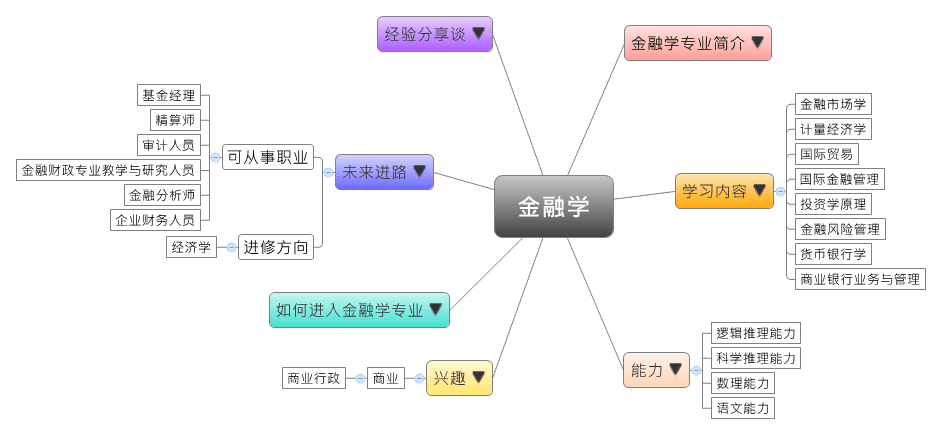

- 专业大观园
-

- 专业介绍
-
什么是金融学专业？
金融学是以融通货币和货币资金的经济活动为研究对象的专业。在经济生活中，信用和货币流通是息息相关的，而研究它们之间的运动规律、在经济生活中的地位和作用等则是金融学的基本内容。金融是指货币流通和信用活动等相关经济活动的总称，广义的金融可指与信用货币的发行、保管、兑换、结算、融通等经济活动，狭义的金融则专指信用货币的融通。在职场上，此专业的职业前景普遍看好，是人人羡慕的金饭碗；在生活中，具备金融学专长有助于理性的投资理财，能让自己的所得稳定且合理的增值。
金融学专业主要培养学生具有金融保险理论基础知识，也通过学习掌握金融保险业务技术，让学生能够运用经济学一般方法分析处理金融保险业务。此外训练学生具备一定综合判断和创新能力，使毕业学生能成为在银行、证券、保险、投资等机融机构与企事业单位从事金融业务和管理工作的高级应用型人才。
现代化金融智能支付工具 日常生活中的金融活动
- 学习内容
-
金融学专业学生主要学习国际金融、投资和金融相关货币之理论知识，由于注重金融实务能力，学生须接受金融资产、金融统计、金融语汇、金融销售实务等专业训练。
本专业主要课程通常会分为三类：宏观金融领域类、微观金融领域类、金融工具类；其他学校也有开设商务管理学原理或保险学原理等课程，为学生未来就业做好准备。金融学专业主干课程有：国际金融、货币银行学、金融市场学、投资学原理、公司金融学、计量经济学、金融工程、金融风险管理、国际金融管理、商业银行业务与管理、国际贸易、随机过程与随机分析初步……等。
本专业可以习得的知识与获得之能力、技能列点：第一，能利用外语获取中外的金融信息，随时维持自己的国际金融敏感度；第二，有系统地掌握金融学的理论与知识，且具备了解金融相关的法律、政策和国际规则的能力；第三，全面掌握金融学的分析方法，并运用现代信息化的工具。
- 能力
-
金融学专业学生，需具备以下能力：
相关性向能力 说明 逻辑推理能力  系统掌握金融的基本理论
系统掌握金融的基本理论
了解国内外证券市场运行规律的理论科学推理能力 具有金融调研、分析、解决实际问题和一定的科研能力数学能力 具备良好的资产评估能力
具有金融统计的分析能力语文能力 精确使用金融语汇的能力，有效地与人沟通
具有较强的外语应用能力，获取金融专业信息
- 兴趣
-
若你对下列活动或事物有高度兴趣，可考虑进入金融学专业学习：
商业 商业行政 擅长精确的数字运算
喜欢整理财务状况，以及分析市场需求
对经营、贸易等使个人或组织能够获利之活动感兴趣
- 如何进入此专业
-
下面列举开设金融学专业的重点大学院校：
- 未来进路
-
可从事职业
金融学专业的学生毕业后，有超过半数以上的学生会继续深造。而在直接就业的学生中，则有六成左右去银行、证券、投资、保险、基金及交易所等金融机构工作，剩余的人则选择进入大型企业的财务部门、互联网融资企业、非营利机构，以及政府的金融监管部门和经济管理部门等。在工作职场上皆能发挥金融统计分析专长：
行业 职业 金融机构 特许金融分析师（CFA）、特许财富管理师（CWM）、基金经理、精算师、证券经纪人、股票分析师 企业 企业财务人员、企业投资人员 政府单位 财政、审计、海关部门的公务员 教育、培训机构
（含各级院校）金融财政专业教师、研究人员 进修方向以下列举金融学专业毕业生可以继续修读之学科门类及一级学科：
学科门类 一级学科 硕士点 经济学 金融学金融数学与金融工程、投资经济、国际金融学、金融资产评估、信用管理、期货与金融、投资学
- 经验分享谈
-
无人机界的苹果——大疆汪滔的飞行梦
2006年，就读硕士班的汪滔创设了自己的公司“大疆科技”，每月大约可售出20套自行研发的飞控系统。目前，大疆年销售数十万架无人机，在全球消费级无人机市占率可达9成，公司的员工亦高达6000人。这些年来，从不到人民币百元的身价，蜕变为百亿元身价，被形容为全球无人机领域第一位亿万富翁的中国人。1980年出生的汪滔与所创办的大疆科技近年来在大陆红得发紫，成为陆媒讨论度最高的企业之一。
汪滔从小就喜欢航空模型，能操控飞机在天空自由地飞翔是汪滔从小的梦想。16岁时，父亲曾送他一架遥控直升机，但这架直升机并无法想飞到哪里就飞到哪里，或者悬停在空中不动。“做一个能自动控制直升机飞行的东西”从小就在汪滔心里扎根。也是这个念头造就了汪滔日后的伟大成就。那么，大疆为什么能推出划时代的创新产品？被媒体形容为“完美主义”的偏执狂、科技狂，并高度推崇“用5000个点子打磨出一个产品”的汪滔，无疑是最大的推手。
汪滔与大疆的成功来自一个梦想，这各梦想不大，但却能不断坚持，直到最后成功。所以这么一个坚持梦想的人，果真开拓了一个以前从没有的市场，也把人类推向了无人机的年代。【资料来源：MBA智库百科. 肖捷[EB/OL]. [2016-2-9].】